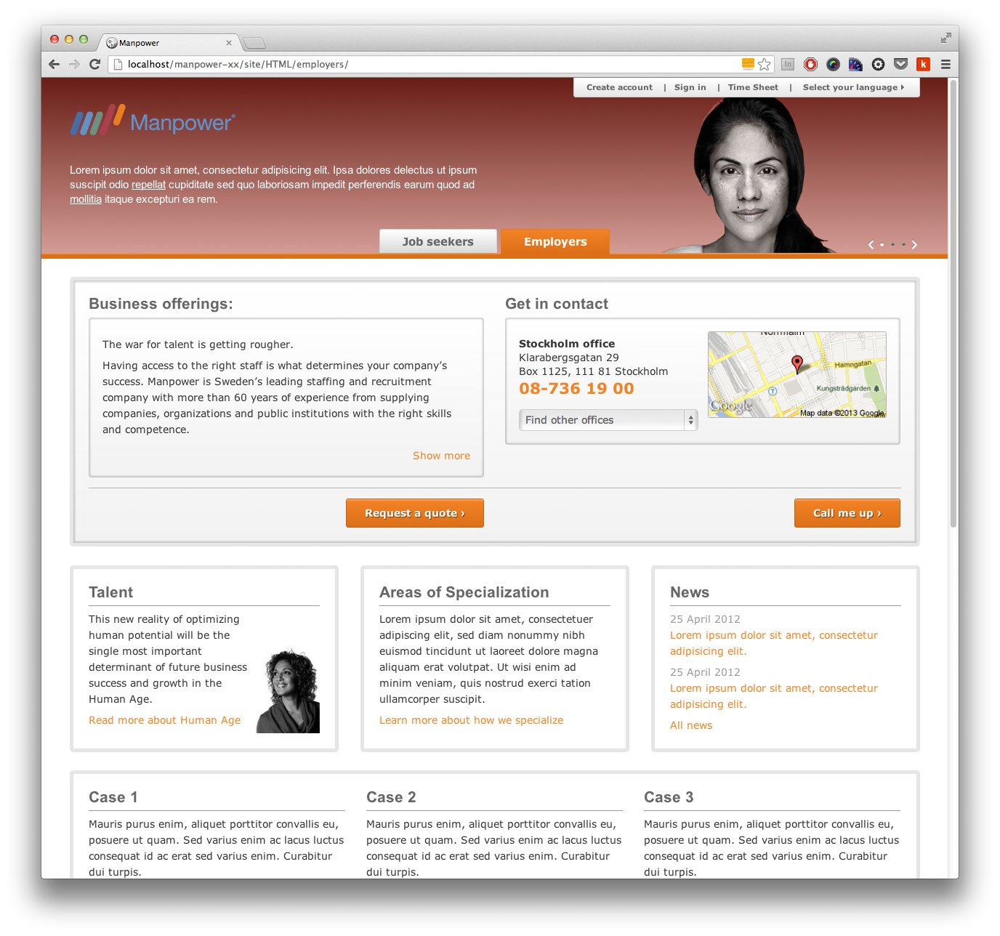
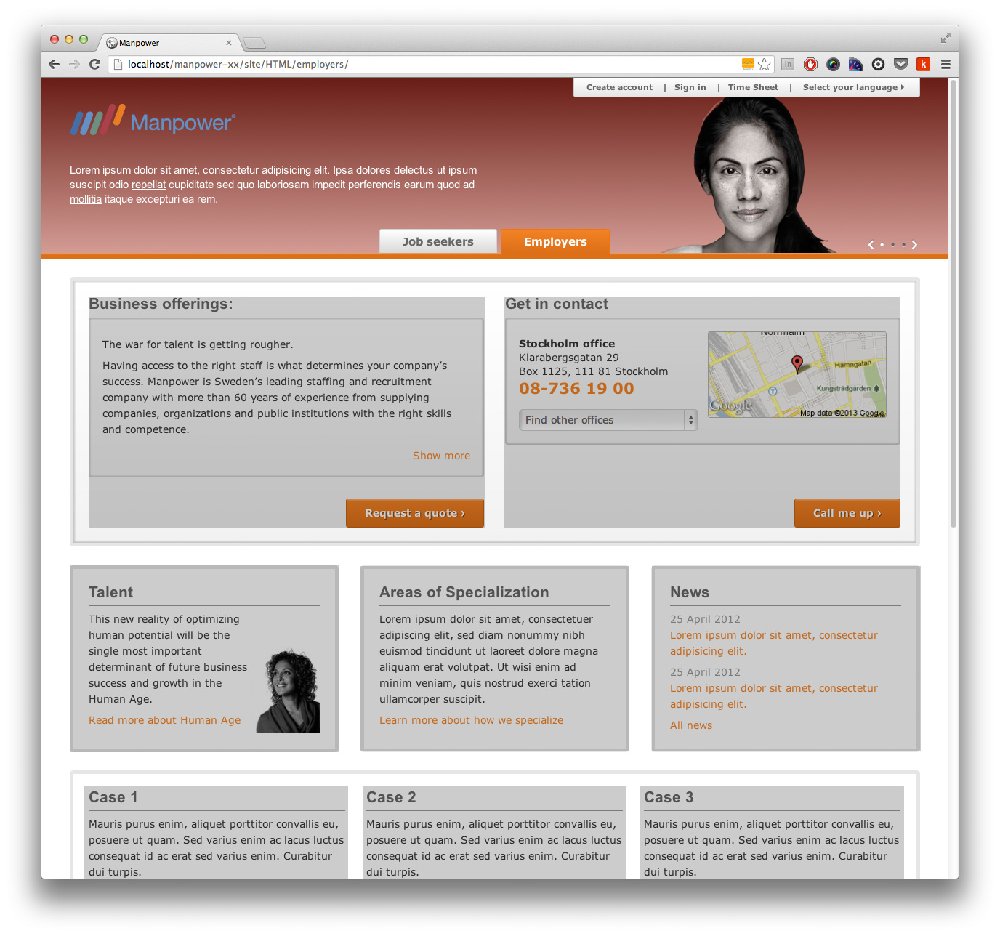

Winston
Tekniken bakom
Responsive web design
Grids
Rutnät – 12, 16 eller 24 kolumner

Fluid vs adaptive grids
Adaptive grid:
- Pixelbaserade dimensioner.
- Manuellt ändra höjder/bredder vid definierade breakpoints.
- Vi vet alltid hur innehåller kommer att se ut.
- Kräver mindre testning.
Fluid grid:
- Procent baserade dimensioner.
- Innehåll flödar om och anpassar sig till storleken på sitt förälder-element.
- Kontrollera när designen "går sönder". Anpassa där efter.
- Framtidssäkert.




We are blinded by browsers. When it comes to RWD, we think about layouts, and often we should, but we have to keep in mind that we are not rectangle artists. We explore solutions to problems. Browsers think in boxes, but humans shouldn't.
CSS Media Queries
Ja och nej frågor till browsern.
Media types
- all
- aural
- braille
- embossed
- handheld
- projection
- screen
- speech
- tty
- tv
Media features
- width
- height
- device-width
- device-height
- orientation
- aspect-ratio
- device-aspect-ratio
- color
- color-index
- monochrome
- resolution
- scan
- grid
@media (min-width: 33em) {
body {
background-color: papayaWhip;
}
}Future proofing
Vector is the new black
SVG och Icon FontsFont Awesome och Entypo
SVG
- SVG-bild är oftast ganska stora och webbläsaren behöver lite längre tid att rita upp dom.
- Bra browser stöd: Chrome 4+, Safari 4+, FF4+, Opera 9.5+, IE9+, Mobila läsare
- För äldre webbläsare (och Android 2.3) behövs PNG-fallbacks.
Icon Fonts
- Font Awesome och Entypo <3
- Mycket bra browser stöd: Allt utom Opera mini och Android 2.1
- Skapa egna font-filer med Fontello. Spara bandbredd.
Struktur
Mobile first stylesheets
Skriv "bas-styles" som ska laddas in i alla webbläsare (och enheter) utanför media queries.
Tänk progressive enhancement och bygg på med nya styles i media queries med min-width.
h1 {
font-size: 2.5em;
}
@media (min-width: 45em) {
h1 {
letter-spacing: 2;
text-shadow: 1px 1px 1px rgba(0, 0, 0, .3);
}
}Dela upp dina styles i flera stylesheets baserat på breakpoints.
Mobile first style: 0-up.css, 450-up.css, 720-up.css
Also okay style: base.css, 0-449.css, 450-719.css
Optimera
Speed is still a feature
Conditional loading
Ladda endast de assets som behövs.
@media all and (min-width: 45em) {
body::after {
content: "desktop";
display: none;
}
}
var size = window.getComputedStyle(document.body, "::after").getPropertyValue("content");
if (size === "desktop") {
// Ladda in fler scripts etc.
}
Lazy loading
Låt browsern ladda ned all JS, men kör det bara när det behövs.
Stora delar av JS-filen är utkommenterad, när vi behöver koden så tar vi bort kommentarerna.
Gmails Lazy Loading
<script id="lazy">
// KOD.
// KOD..
// KOD...
</script>
<script>
function lazyLoad() {
var lazyElement = document.getElementById("lazy");
var lazyElementBody = lazyElement.innerHTML;
var jsCode = stripOutCommentBlock(lazyElementBody);
eval(jsCode);
}
</script>
<button onclick="lazyLoad()">Lazy Load</button>2 stegs sociala widgets
Ladda endast in widgets när användaren vill interagera med dom.
Använd ikoner som placeholders till att börja med.
Sparar bandbredd, Facebooks like knapp väger 120kB och 4 HTTP-requests
Bilder
Det finns ofta en stor datakaka att spara när det kommer till bildoptimering.
W3C har skapat en hel grupp för att adressera detta problem.
Det finns en del lösningar ute som fungerar bra, upp till projektet vilken man väljer.
CSS-content
HTML:
<img src="image.jpg"
data-src-600px="image-600px.jpg"
data-src-800px="image-800px.jpg"
alt="">
@media (min-device-width:600px) {
img[data-src-600px] {
content: attr(data-src-600px, url);
}
}
@media (min-device-width:800px) {
img[data-src-800px] {
content: attr(data-src-800px, url);
}
}
RESS
Responsive Server Side
Servern levererar rätt bild genom device sniffing.
JS lösningar
- HiSRC (jQuery)
- rwdImages (jQuery)
- Responsive Enhancement
Framtiden
<picture>
<picture alt="Description of image subject.">
<source srcset="small.jpg 1x, small-highres.jpg 2x">
<source media="(min-width: 18em)" srcset="med.jpg 1x, med-highres.jpg 2x">
<source media="(min-width: 45em)" srcset="large.jpg 1x, large-highres.jpg 2x">
<img src="small.jpg" alt="Description of image subject.">
</picture>